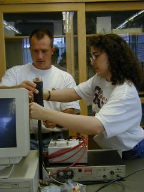
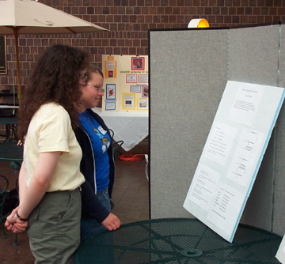
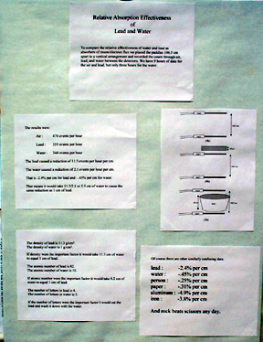

Prospective Teachers
Presentation
for Prospective Teachers
Application
Brochure
Print-out Poster
On This Page
Is PARTICLE right for you?
Why get involved?
Just for physics?
Takes a lot of time?
Not very technical?
What is the summer institute?
How will students benefit?
Quotes from participating teachers
|
Is
PARTICLE right for you?
 |
Why
should I get involved with PARTICLE?
PARTICLE is an easy way to introduce your students to topics
in modern physics and have them experience real experimental
research. Students are excited to learn about what is on the
cutting edge of physics and enjoying contributing to original
cosmic ray research. |
Is
PARTICLE just for physics classes?
PARTICLE is most often used in physics and earth science
classes, but could also be implemented into chemistry, biology,
or any high school science class. This basic experimental
research can be done at any grade level. More advanced students
may choose to do more statistical analysis, but the basic
analysis only requires an understanding of algebra and graphing.
|
Doesn’t
it take a lot of time?
Nope! The first step is to participate in the three week
Summer Institute. After that, it’s up to you. PARTICLE
does not have to take over your class! The way the program
is implemented varies from teacher to teacher and school to
school. At some schools, the research projects are a class
requirement and at some they are an extra-credit activity.
Some teachers do research projects after the AP exams are
over. If you don't have an entire class period to devote,
you can do a ten minute demonstration. Many teacher have the
telescopes set up in the back of the room collecting data
while teaching other lessons. In this way, it doesn't take
time away from class, but you can still collect data to analyze.
|
What
if I’m not very technical?
We are here to help you! You will learn how to set up and
use the muon telescopes during the Summer Institute and after
that we are available for technical support in your school.
Each year, there is a graduate student who is devoted to helping
your projects succeed by visiting your classroom and helping
out in anyway possible. He or she will bring demonstrations,
give a talk, or help with technical problems. To see what
other teachers have done, look at their websites. |
What
will the Rochester
PARTICLE Summer Institute include?

- Construction of a muon detector and cosmic ray telescope
- The development of labs using the muon detectors for
classroom use with students.
- Exploration of physical and web-based demonstrations of
modern physics phenomena
- Lectures from University Physicists
- Tours at the University of Rochester (including the Laser
Energetics Lab) and Cornell University (accelerator)
- A stipend of $300 per week.
- Up to three graduate credit-hours in physics and a special
rate of $100 per hour
|
How
will your students benefit?
- Classroom use of comic ray telescopes
- Rochester PARTICLE web-site for sharing cosmic ray data
and laboratories
- Classroom use of curricular materials developed by QuarkNet
program
- Student conference (PARTICLE day) at University of Rochester
to present results of classroom cosmic ray experiments


|
Quotes
from participating teachers
"To me, it's the same as a spring scale. It's just another
apparatus. ... It's just so easy to use. I think teachers
need to push a little bit to get through that initial phobia
and apply a little imagination."
"I think its one of the most enjoyable things [the students]
do all year. I don't know if it puts them on the trail to
become a future physicist, but I think it makes them see that
doing research, doing science, is something that they are
very capable of doing."
|
| |
|

{kind=link}